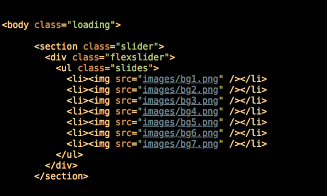
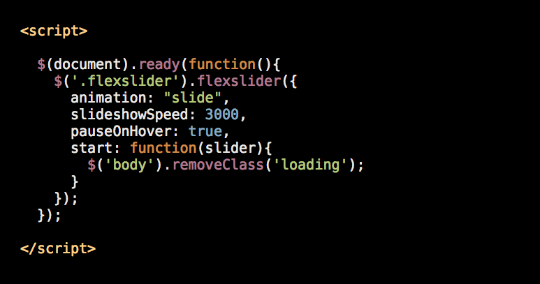
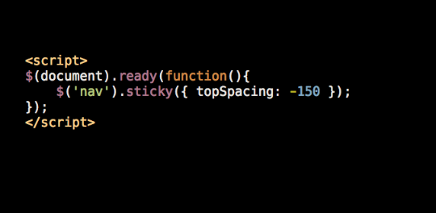

Web Design 2 | WNM 250
Lecture 12 | November 22nd, 2017
Overview Web Development
Slides of this lesson you can find it at: https://husamui.github.io/lesson_12.html
Responsive Web Development
Fall 2017
Today
-
jQuery Animation
More of jQuery animation -
jQuery Plug-ins
Expand jQuery -
Slideshow plug-in
Using jQuery flexslider to Create Slideshow -
Sticky Header plug-in
It makes an element fixed or “sticky” when the window is scrolled to a specific location
Scroll to top
$('#back-to-top').click(function(){
$('body,html').animate({scrollTop: 0}, 400);
});
});jQuery Plug-ins
plugins enable you to create richer and more advanced interactions without writing the code yourself
Slideshow
FlexSlider offers the best combination of responsiveness, ease of use, and options. The first thing you will need to do is download FlexSlider.
Setup the html
call the plug-in with options
StickyJS
StickyJS does one thing: It makes an element fixed or “sticky” when the window is scrolled to a specific location
To make an element Sticky
Random Background Image